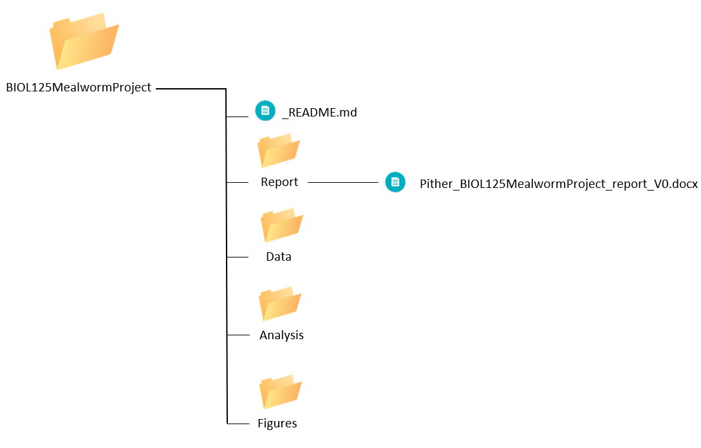
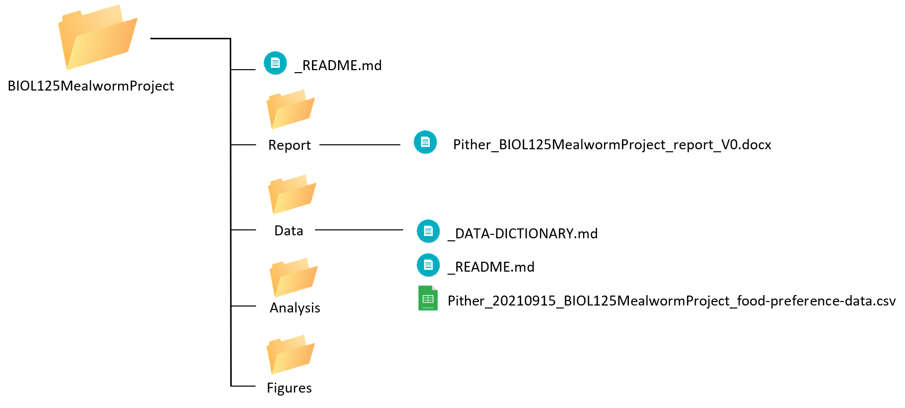
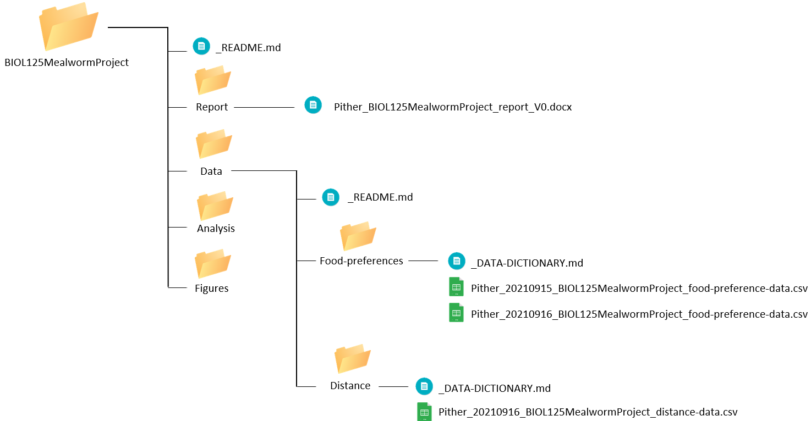
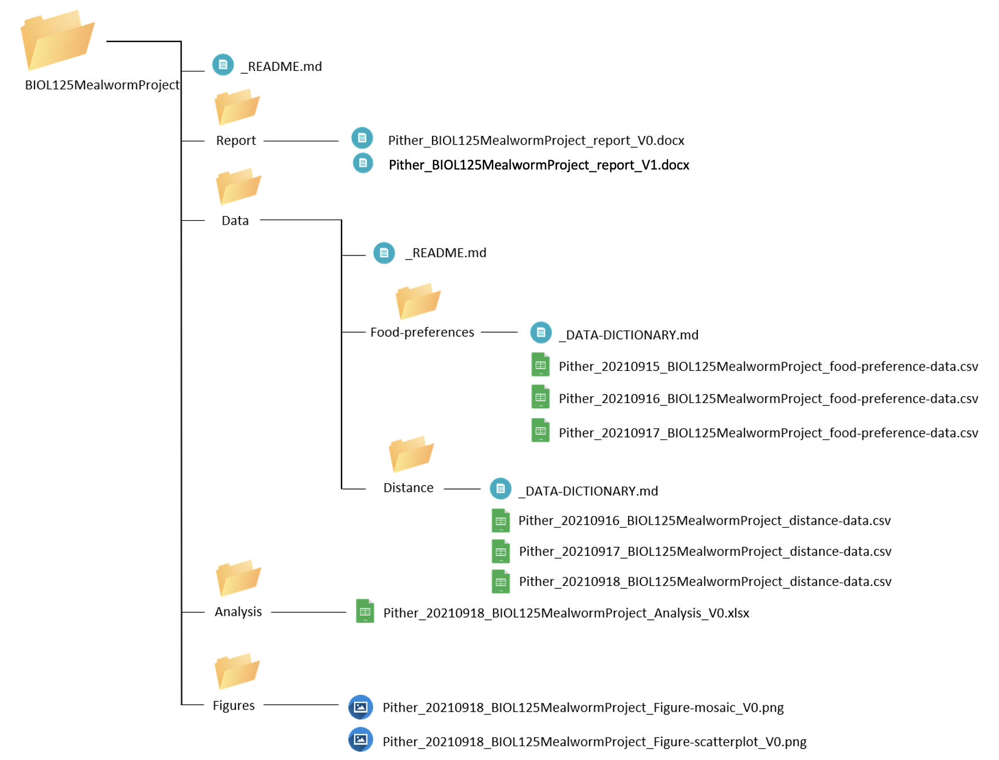
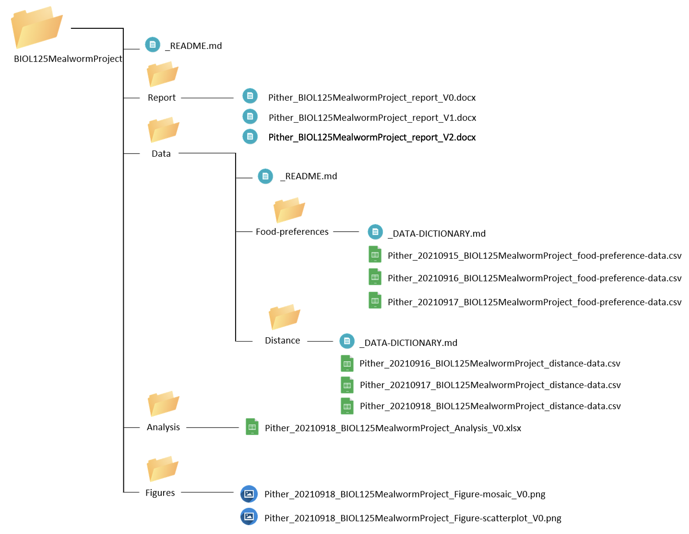

4.8 Example BIOL 125
Let’s work through another example where we start our project off using both appropriate directory structure and file naming conventions. Say you’re a student in BIOL 125 working on a research project testing mealworm food preferences…
Day 1
On day one of our research project, we are asked to prepare the beginning of a lab report that states our research question, hypothesis, and proposed methods. First, we need to create the root folder for our project:
BIOL125MealwormProject/Within our root folder, we create a _README.md file to describe our directory structure. Let’s add our project name, date the folder was created and who created it, a short description of the project, group member names, file structure (major folders and their proposed content), and naming conventions to this readme file. Your file should look something like this:
Since we have just started our project, there won’t be files in most subfolders we create. However, it’s good to have the skeleton of what we want our directory to look like so everyone in the group places new files in the correct location. Later, if needed, we can modify our directory structure and update our readme file to reflect those changes.
Since we will be using the naming conventions outlined in Chapter 1, we can list those naming conventions here. It may seem strange to outline the naming conventions for documents that haven’t been created yet, but having a strategy for naming files from the beginning of the project is very important. It ensures everyone is following the same set of rules when they add or edit files in the project, which helps everyone stay on the same page when working in a shared directory.
Now that our root folder and root readme files are set up, we need to create the subfolders within BIOL125MealwormProject/. Since we outlined the major subfolders in our readme file as Report, Data, Analysis, and Figures, we’ll use these same names when we create the subfolders. Finally, we can open up a new Word document for our lab report and save it to the Report folder using the appropriate naming conventions.
Pither_BIOL125MealwormProject_report_V0.docxHere is what our project directory looks like so far:

Day 2
Today, we completed a pilot experiment and collected some data. We saved this data file into our project’s corresponding Data folder using appropriate naming conventions.
New files:
Pither_20210915_BIOL125MealwormProject_food-preference-data.csvSince we have added our first dataset into our project folder, we need to create a corresponding _README.md and _DATA-DICTIONMARY.md.
Let’s start by creating the data directory readme and provide a description of our data set, collection methods, who collected the data, and where it was collected. It should look something like this:
Next, let’s create a data dictionary for our new dataset. It should look something like this:
Now our project directory looks like this:

Day 3
Now that our group has completed its pilot project, we decided to expand our data collection and start recording how far mealworms are willing to travel to get food. In addition to this new distance data, we continued to collect data on food preferences.
New files:
Pither_20210916_BIOL125MealwormProject_food-preference-data.csv
Pither_20210916_BIOL125MealwormProject_distance-data.csvSince we have a new dataset, we’ll have to update our data directory readme file with a description of the new dataset. Remember to note the date it was updated and who it was updated by. Our updated data directory _README.md file should look something like this:
Now our updated data directory readme file includes descriptions for both datasets.
In the interest of organization, let’s keep our food preferences and distance data in separate subfolders. So, we’ll create two new subfolders within the Data folder. We’ll call one Food-preferences/ and the other Distance/. This way, we can organize csv files into specific folders for each corresponding dataset. After doing this, we need to update the _README.md in our root folder since we’ve modified our directory structure. This readme should now look something like this:
Next, let’s also create a data dictionary for our new dataset within our distance subfolder. Remember to note the date it was updated and who it was updated by. It should look something like this:
Since we made some updates to our project design and methods, I’ll also go ahead and update our lab report to reflect those changes alongside justification for the changes. Then, I’ll be sure to save my updated lab report using the appropriate naming conventions.
Pither_BIOL125MealwormProject_report_V1.docxNow our project directory looks like:

Day 4-5
Over these days, we collected our last rounds of data, created some figures, and analyzed the data. So we have a bunch of new files that we need to make sure are placed correctly within our project directory.
New files:
Pither_20210917_BIOL125MealwormProject_food-preference-data.csv
Pither_20210917_BIOL125MealwormProject_distance-data.csv
Pither_20210918_BIOL125MealwormProject_distance-data.csv
Pither_20210918_BIOL125MealwormProject_Analysis_V0.xlsx
Pither_20210918_BIOL125MealwormProject_Figure-mosaic_V0.png
Pither_20210918_BIOL125MealwormProject_Figure-scatterplot_V0.pngWe’ll save all 3 new data files into the Data/ subfolder of our directory. Since we’ve already described these datasets in the data directory _README.md file and have a corresponding _DATA-DICTIONARY.md for both, there are no more updates needed.
Next, we’ll save our analysis into the Analysis/ subfolder and the figures into the Figure/ subfolder.
Now our project directory looks like:

Day 6
Today is the last day of our project and we completed the final copy of our report. We will make sure this is saved into the Report folder using the appropriate naming conventions.
New files:
Pither_BIOL125MealwormProject_report_V2.docxOur final directory looks like this:

We can start to see that if you were to share your entire project directory with another person, it would be relatively easy for them to locate files and understand the meaning behind each document in our project. They would also know when changes were made and who made these changes, so if they had any questions, they’d know exactly who to ask!